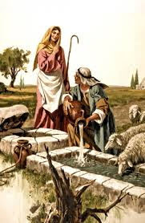

Home Quiz
Shadowland: Beginnings: Week 34
Genesis 29: The Rights of the Firstborn
Deuteronomy 32:9-14 Jacob's time with Laban in song

- 29:1 "lifted his feet" (often translated "went on his journey") - Jacob
was walking on air for the remaining 500 mile hike to Haran, believing
the promises he had received.
- 29:2-3 As Pink says, there is some spiritual significance about these
details (that he fails to discern). But I can at least point to
the practical significance. Wells are scarce resources. The
stone kept out sand, but since this was a shared well, was also
big enough to require several men to move it, so that one party
could not hog it. Or at least too big for a child or female.
- 29:4 Eliezer, when he arrived at Haran seeking a wife for Isaac,
immediately asks the Lord for guidance in the momentous task
of choosing a Godly wife. Jacob asks some shepherds.
- 29:7 Jacob was trying to get rid of these guys to talk to Rachel.
- 29:8 But his ploy fails, they will not move the stone without Laban's
daughter, especially because she cannot move the stone.
- 29:10 The three references to his mother suggest the source of Jacobs
emotion. Jacob did not necessarily move the stone by himself
("strong as 3 men!"); the other 3 were waiting for Rachel. But
I'm pretty sure he was showing off, with an extra boost of strength.
Isaac's bride waters the camels of Eliezer. Jacob waters the sheep
of Rachel.
- 29:15 "serve me" - Jacob lied to receive Isaacs blessing, "Let peoples
serve thee." But Jacob's first discipline is to serve Laban.
- 29:17 "tender eyed" - teary. Either caring and compassionate - or
bleary eyed from allergies or dry desert air. (Commentators are
split.) "well favoured" - to this day, Rachel is more revered.
- 29:20 "they seems to him but a few days" - a poignant description
of romantic love.
- 29:25 Bear this in mind when feeling sorry for Leah later on:
She is complicit in the scheme, keeping her identity concealed
from Jacob.
- 29:26 Jacob gets a hard lesson in the rights of the firstborn. And
smarts from a mirror of the deception he foisted on his father.
- 29:31 Not just the reader, but God himself is heartbroken over
Leahs rejection. I note that while many OT saints had multiple
wives, they only had one "favorite". (Which sometimes changed.)
Thus, modern divorce and remarriage is essentially serial polygamy.
Apparently, while a man can father children by multiple women,
he can only "cleave to" one.
- 29:32 Reu-ben - "see a son". Because the Lord has seen my affliction.
- 29:33 Simeon - "hearing". Because the Lord has heard that I was hated.
- 29:34 Levi - "attached". Now this time my husband will be joined to me.
- 29:35 Judah - "praise". Now will I praise the Lord. Leah continues
the line of the Seed. Leah is buried next to Sarah - Rachel has a tomb
by herself.
Hindsight is 20/20
Discussion question: what should Jacob have done upon discovering
the deception?